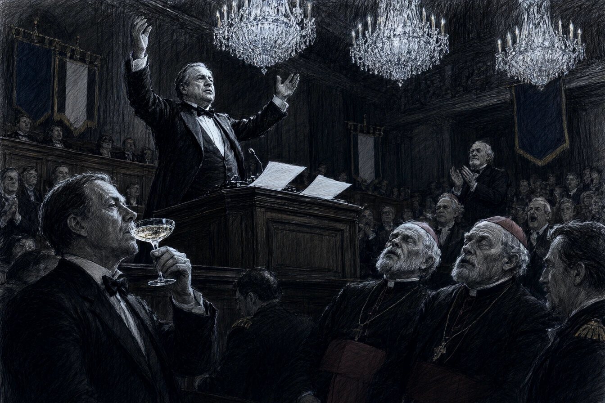

Dans les salons dorés de la préfecture du Bas-Rhin, sous les lustres de cristal de Baccarat qui tempêtaient d'éclairs sous les flashs des photographes, trois cents notables du département trinquaient au vin d'honneur du congrès régional des maires.
Monsieur Armand Dupont, député de la circonscription de Bischwiller et questeur de l'Assemblée, rajustait son nœud papillon de soie noire devant la glace d'un trumeau. À cinquante-six ans, Armand possédait une voix d'orgue de cathédrale, un ventre respectable moulé dans une redingote sur mesure et l'art souverain de ne jamais froisser un électeur rural.
Son attaché parlementaire, un jeune homme aux joues pâles nommé Vincent, lui tendit un dossier de maroquin rouge.
« Votre discours sur l'attractivité des zones artisanales et le développement des rond-points fleuris, monsieur le député. J'ai glissé les citations d'usage sur la fierté alsacienne et la rigueur budgétaire. »
« Tu as bien abrégé la partie sur les subventions d'assainissement, Vincent ? Le préfet a faim, les truites au riesling refroidissent au buffet. »
Vincent avait abrégé, comme toujours. Il avait aussi, la veille, rapporté de Niederbronn une feuille ronéotypée, le tract que le délégué des fonderies lui avait remis. Il l'avait sortie en voiture ; Armand avait trouvé cela violent, excessif, et s'était endormi contre la vitre. Vincent avait glissé la feuille dans la chemise cartonnée, entre deux pages du discours, en se promettant de la retirer avant la tribune. Le délégué lui avait fait promettre de le prévenir si le député lisait la feuille. Vincent ne l'avait pas prévenu, et il n'avait pas retiré la feuille.
Armand gravit les trois marches de l'estrade d'un pas majestueux sous les applaudissements nourris des conseillers généraux.
À la tribune, le député posa ses feuillets sur le pupitre de chêne et saisit ses lunettes d'écaille. La première page était bien celle du discours, la deuxième aussi, mais la troisième, une feuille ronéotypée sans en-tête, avec une tache de café dans l'angle et le tampon violet du syndicat des métallurgistes, s'était glissée entre les pages. Armand reconnut le tampon et la tache.
Il posa ses lunettes, les reprit, et commença d'une voix qui n'était pas tout à fait la sienne :
« Mes chers concitoyens, l'heure n'est plus aux faux-fuyants des commissions d'arrondissement. Nous sommes gouvernés par une caste d'intermédiaires parasites qui engraissent leurs clientèles sur le dos des travailleurs du fer et de la terre ! »
Un silence de plomb tomba d'un coup sur l'assemblée. Au premier rang, monsieur le préfet cessa de porter sa coupe à ses lèvres, la bouche entrouverte. Monsieur le président de la chambre de commerce devint cramoisi.
Il aurait pu s'arrêter là. Le silence était encore réparable : une plaisanterie, une page tournée, et la salle aurait ri. Mais pour une fois, personne ne dormait. Il regarda le préfet, qui avait reposé sa coupe, et il tourna la page.
« Les notables s'empiffrent de terrines aux frais de la caisse d'allocations pendant que les ateliers ferment un à un le long de la Moder ! Il est temps de balayer ces faux dévots qui transforment la République en syndicat de faillite bourgeoise ! »
L'orateur frappa du poing sur le pupitre, et le micro émit un larsen aigu qui fit sursauter deux évêques auxiliaires.
Armand leva les bras au ciel, salua d'un geste auguste, et descendit de la tribune d'un pas martial. Il avait les mains moites et le souffle court.
Pendant dix secondes, on n'entendit que le bourdonnement du ventilateur de plafond.
Puis, au fond de la salle, un vieux maire de village aux sabots vernis laissa échapper un éclat de voix :
« Ça, c'est parlé vrai ! »
Une première salve d'applaudissements crépita parmi les délégués des communes rurales. En un instant, toute la travée centrale se leva, trépignant sur les parquets cirés. Les jeunes maires applaudissaient à tout rompre, croyant à un coup d'éclat politique calculé pour renverser la vieille majorité départementale. Un conseiller général cria « À Paris ! » sans savoir ce qu'il criait.
Monsieur le préfet s'avança vers Armand Dupont, qui s'épongeait le crâne avec son grand mouchoir blanc sans comprendre la clameur qui montait autour de lui. Le représentant de l'État lui saisit chaleureusement les deux mains.
« C'était d'une audace inouïe, mon cher député. Une transgression magistrale. Le ministre de l'Intérieur cherchait une figure capable de canaliser la colère des territoires sans rompre avec Matignon. Votre discours est une pierre blanche. »
« Monsieur le préfet… balbutia Armand, la chemise trempée de sueur. C'était un devoir de sincérité républicaine… »
« Vous partez pour Paris par le train de nuit de vingt-deux heures, trancha le haut fonctionnaire en lui tapotant l'épaule. Le ministre veut vous voir. Mais demain matin, à la gare de l'Est, vous ferez une déclaration. Vous direz que ce discours était une provocation calculée, une pierre blanche du ministère, et que le tract que vous avez lu est un faux grossier. La République a besoin d'hommes qui savent crier la vérité du peuple sans y croire une seconde. »
Armand ouvrit la bouche, mais le préfet se tourna vers Vincent, qui se tenait à deux pas, la chemise cartonnée contre la poitrine.
« Vous, le jeune homme. Vous rédigerez le communiqué. Le député ne peut pas laisser croire qu'il pense ce qu'il a lu. Envoyez ça à l'AFP avant midi. Et si le ministre est content, il y aura une place pour vous à Paris. »
Vincent regarda Armand, qui fixait ses chaussures, et le préfet lui tendit une carte de visite avec un numéro de téléphone au dos.
« Oui, monsieur le préfet », dit Vincent.
Il prit la carte, les doigts tremblants, et le préfet ne le remarqua pas.
* * *
À vingt heures, dans la cantine des fonderies de Niederbronn, la radio du comptoir diffusait les informations. Les ouvriers de l'équipe du soir mangeaient leur choucroute debout, casquette sur la nuque. Le haut-parleur cracha la voix d'Armand : la caste d'intermédiaires parasites, les ateliers qui ferment le long de la Moder, les faux dévots. Un jeune ouvrier tapa sur la table, et sa casquette glissa sur son front.
« Il a osé, le salaud ! »
Le délégué syndical, un homme de cinquante ans aux mains noires de fonte, reposa sa fourchette. Il avait rédigé ce tract la semaine précédente, dans le bureau du syndicat, et la ronéo en avait tiré une centaine d'exemplaires. Il reconnaissait chaque phrase et ne dit rien.
Le jeune ouvrier haussa le menton.
« C'est ton tract, ça, non ? »
Le délégué prit sa casquette, l'enfonça sur sa tête et sortit. Dehors, le Falkensteinerbach charriait une eau grise entre les ateliers vides. Il alluma une cigarette, fixa la cheminée sans fumée, et jeta l'allumette dans le caniveau. Puis il prit le chemin de la gare.
* * *
À vingt et une heures, Vincent attendait sur le quai de la gare de Strasbourg, deux feuilles dans la poche intérieure de sa veste : le communiqué qu'il avait rédigé pour l'AFP, et le tract que le délégué lui avait remis à Niederbronn. Le train de nuit pour Paris était à quai. Armand voyageait en première classe, rideau tiré, téléphone contre l'oreille.
Vincent vit le délégué sur le quai, en chemise propre, un sac de sport à la main. L'homme scrutait les voyageurs, comme s'il cherchait quelqu'un. Il aurait pu descendre, lui rendre la feuille, lui dire que le communiqué était faux et lui demander pardon. Il pensa à la carte de visite du préfet, au communiqué que l'AFP diffuserait à midi. Il resta dans le couloir, la main sur la poignée, tandis que le contrôleur remontait le quai.
Le délégué ne le vit pas ; il monta dans le wagon de seconde classe, deux voitures plus loin.
Le train partit à vingt-deux heures ; Vincent s'assit dans son compartiment, sortit les deux feuilles et les étala sur ses genoux. Le communiqué était propre, sans rature, et le tract avait une tache de café et une phrase soulignée au crayon : « Il est temps de balayer ces faux dévots. » Vincent plia le communiqué, le rangea dans sa poche droite, et garda le tract sur ses genoux. Il le relut jusqu'à l'aube, sous la veilleuse du compartiment.
* * *
À Paris, il descendit le premier, le communiqué dans sa poche droite et le tract dans sa poche gauche. Sur le quai, un chauffeur tenait une pancarte à son nom.